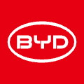
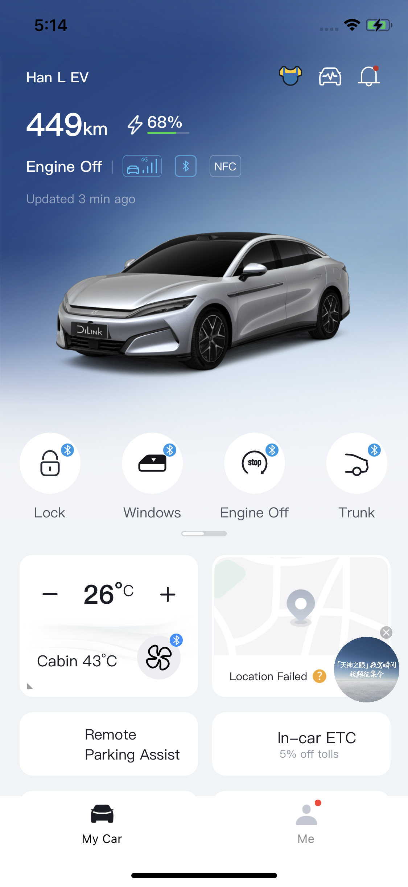
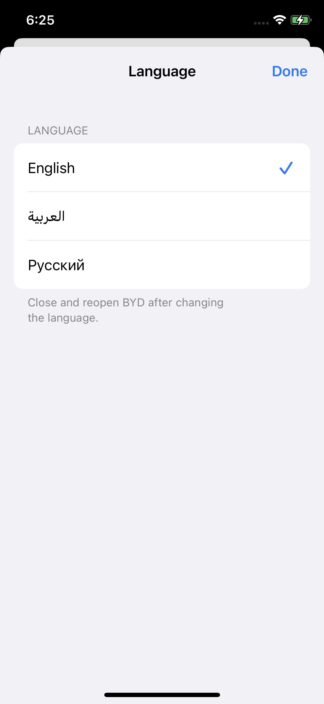
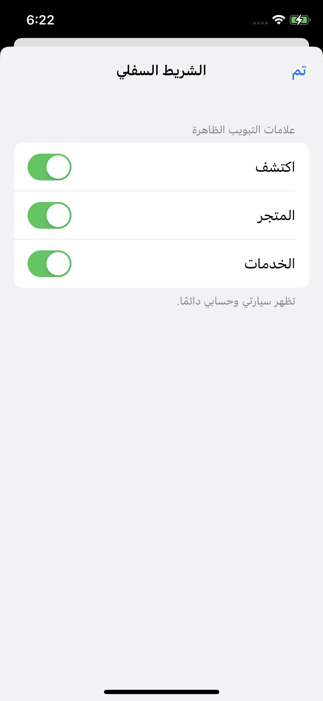
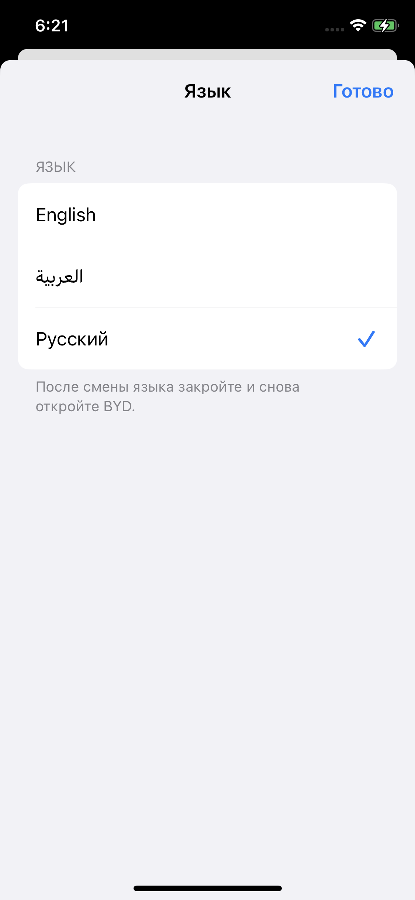

مشروع مجتمعي غير رسمي
تطبيق BYD.
بلغتك.
تطبيق BYD الصيني للآيفون بالعربية والإنجليزية والروسية، مع اختيار تبويبات الشريط السفلي، وعودة الويدجت، وميزة الفتح عند الاقتراب بشكل اختياري. جرّبه مجانًا دون جيلبريك.
يجب تثبيت وإعداد AltStore Classic أولًا. افتح هذه الصفحة في Safari على آيفون. يتطلب الإعداد الأولي كمبيوتر Mac أو Windows وحساب Apple الخاص بك. لم تستخدم AltStore من قبل؟ ابدأ هنا.
الجديد في المراجعة الرابعة: الويدجت
عودة ويدجت الشاشة الرئيسية وشاشة القفل، بالعربية والإنجليزية والروسية. يتضمن التحديث إصلاح أيقونات التحكم، وعرض وقت التحديث المحلي، واستعادة الأيقونات المفقودة في بطاقات التطبيق.
عندما يسألك AltStore، اختر Keep App Extensions للاحتفاظ بالويدجت. بعد التحديث، افتح BYD واتركه نحو 30 ثانية، ثم أضف ويدجت BYD من قائمة الويدجت. قد تحتاج الويدجت الموجودة إلى بعض الوقت للتحديث، وهي تتبع اللغة التي اخترتها داخل BYD.
يحتوي BYD على أربع إضافات للويدجت؛ يستخدم التطبيق مع إضافاته خمسة App IDs إجمالًا. تحقّق من المتاح في AltStore → My Apps → View App IDs. شرح AltStore لحدّ App IDs.
الفتح عند الاقتراب · ميزة تجريبية اختيارية
افتح Me → Settings → Walk-up unlock (أنا ← الإعدادات ← الفتح عند الاقتراب). افتح السيارة عند الاقتراب واقفلها اختياريًا عند الابتعاد باستخدام مفتاح BYD للبلوتوث المفعّل لديك. العمليات التلقائية ودعم الموقع ورصد الحركة وتسجيل الاختبارات متوقفة افتراضيًا للمستخدمين الجدد. يحتفظ مستخدمو نسخ الاختبار الخاصة بإعداداتهم المحفوظة.
- تأكد من عمل الفتح والقفل العاديين عبر بلوتوث BYD. افتح اختر مسافاتك (Choose your distances)، وقِس موضعي الفتح والقفل والهاتف في المكان الذي تحمله فيه عادة، ثم احفظ. تتوقف العمليات التلقائية أثناء فتح المعايرة.
- فعّل الفتح عند الاقتراب والقفل عند الابتعاد إن رغبت. ابدأ بعيدًا عن السيارة، ثم اقترب وابتعد وتحقق مما فعلته السيارة فعليًا. عاير كل هاتف على حدة.
- للعمل والشاشة مقفلة، افتح الاكتشاف في الخلفية ← دعم الموقع، واتبع طلبات الأذونات واستخدم السماح بالموقع في الخلفية عند ظهوره. رصد الحركة اختياري ويطلب إذن الحركة واللياقة. أعد فتح BYD بعد إعادة تشغيل الهاتف أو إغلاق التطبيق بالكامل.
قد يزيد دعم الخلفية استهلاك البطارية، ولا نضمن الاستمرار دون انقطاع أو طوال الليل. تعالج هذه الميزة الموقع على الهاتف ولا تحفظ الإحداثيات أو ترفعها. لميزات الموقع الأخرى في BYD إعداداتها الخاصة.
مشكلة معروفة على XS: سجّل جهاز iPhone XS واحد قراءات إشارة غير متسقة وفتحًا غير مقصود للسيارة من داخل المنزل، واستمرت قراءات الإشارة غير المتسقة بعد تحديث iOS 18.7.10. السبب غير محسوم ولم يثبت وجود عطل في الجهاز. إذا تداخلت قراءات القرب والبعد أو حدثت عمليات غير مقصودة، أوقف الميزة وأبلغنا.
لإرسال ملاحظات، فعّل سجلات الاختبار قبل التجربة، وضع علامات عند اللحظات المهمة ثم صدّر السجل. اذكر طراز الهاتف وإصدار iOS وطراز السيارة وحدود الإشارة وحالة الشاشة واستجابة السيارة الفعلية. راجع السجلات قبل مشاركتها علنًا.
الإبلاغ عن سلوك الفتح عند الاقترابمن داخل التطبيق
لقطات حقيقية من آيفون. اضغط على أي صورة لعرضها بالحجم الكامل.
{kind=link}

{kind=link}

{kind=link}

{kind=link}

١. إعداد AltStore Classic
إذا كان AltStore Classic جاهزًا لديك، انتقل إلى الخطوة التالية. وإلا، ثبّت AltServer على الكمبيوتر واستخدمه لتثبيت AltStore Classic على آيفون. استخدم حساب Apple الخاص بك؛ لا تحتاج إلى اشتراك مطوّر مدفوع. فعّل نمط المطوّر (Developer Mode) على iOS 16 أو أحدث.
تشرح الفيديوهات إعداد AltStore. قد تختلف الشاشات والخطوات حسب الإصدار؛ يمكنك الرجوع إلى الأدلة الرسمية المحدثة عند الحاجة: دليل macOS · دليل Windows.
٢. تثبيت BYD أو تحديثه
- اضغط على إضافة إلى AltStore Classic أعلاه، ثم وافق على إضافة المصدر.
- ابحث عن BYD Localized داخل AltStore، وراجع الأذونات ثم ثبّت التطبيق باستخدام حساب Apple الخاص بك. عندما يسألك AltStore، اختر Keep App Extensions للاحتفاظ بالويدجت.
- افتح BYD وسجّل الدخول بحساب BYD الخاص بك. انتقل إلى Me → Settings (أنا ← الإعدادات) لاختيار اللغة وتبويبات الشريط السفلي.
التطبيق مثبّت لديك؟ حدّث المصدر في AltStore، ثم اختر Update بجانب BYD ضمن My Apps. ابحث عن 9.16.0 · Revision 4. احتفظ بالتطبيق المثبّت واستخدم حساب Apple نفسه للحفاظ على بياناته المحلية.
أبقِ AltServer قيد التشغيل ويمكن الوصول إليه عبر شبكة Wi-Fi نفسها أو كابل USB عند التثبيت أو التحديث أو تجديد التوقيع. مع حساب Apple المجاني، جدّد توقيع AltStore وBYD قبل انتهاء صلاحية السبعة أيام. حجم التنزيل نحو 349 ميجابايت، وتعتمد سرعته على اتصالك بخوادم GitHub. اقرأ الدليل الكامل.
التثبيت باستخدام Impactor
استورد IPA إلى Impactor، واترك Name باسم BYD مع الاحتفاظ بجميع إضافات الويدجت. وقّع وثبّت بحساب Apple الخاص بك.
إذا ظهر Developer API error 35 بسبب عدم وجود appIdName، اكتب BYD في حقل Name وأعد المحاولة بالملف نفسه. اترك إعدادات المعرّف ومجموعات التطبيق الافتراضية كما هي. تنزيل ملف IPA وحده لا يثبّت التطبيق. اقرأ تعليمات Impactor.
اضبطه كما تحب
- اختر العربية أو الإنجليزية أو الروسية من الإعدادات.
- أخفِ الاكتشاف والمتجر والخدمة، كلًا على حدة.
- اعثر على «سيارتي» بأيقونة السيارة الأصلية.
- فتح اختياري عند الاقتراب وقفل عند الابتعاد، مع المعايرة وسجلات اختبار محلية.
- ويدجت مترجم للشاشة الرئيسية وشاشة القفل.
أغلق BYD بالكامل ثم أعد فتحه بعد تغيير اللغة. يتغير ظهور التبويبات فورًا، ويظل تبويبا «سيارتي» و«أنا» متاحين.
نسخة تجريبية عامة · المراجعة الرابعة
تم تأكيد عمل بيانات الويدجت وأيقوناته وأوامره في الاختبارات الخاصة على iPhone XS دون جيلبريك. اجتاز إصلاح مساحة رقم المدى الأخير في المراجعة الرابعة اختبارات عرض بالعربية والإنجليزية والروسية. لا يزال تحديث النسخة العامة نفسها على الهاتف بانتظار التحقق.
يتطلب iOS 15 أو أحدث. لم تُختبر كل الهواتف والسيارات أو الاستمرارية طوال الليل. لا تزال مشكلة الإشارة المبلّغ عنها على XS غير محسومة. تبقى بعض النصوص والصور بالصينية، وقد تظهر صفحة الملف الشخصي فارغة.
الإبلاغ عن مشكلةداعمونا
شكراً للمجتمعات التي تدعم هذا المشروع.